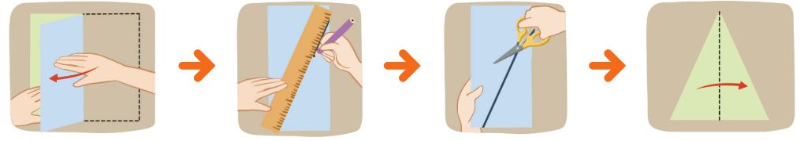

이등변삼각형의 각의 크기에 대해 알아봅시다.
물음 1
물음 2
물음 3
색종이로 이등변삼각형을 만들어 보세요.
꾸러미 4
만든 이등변삼각형에서 크기가 같은 각이 있는지 찾아보세요.

예
길이가 같은 두 변에 있는 두 각의 크기가 같습니다.
이등변삼각형의 각의 크기에 대해 알게 된 것을 이야기해 보세요.
예
이등변삼각형은 길이가 같은 두 변에 있는 두 각의 크기가 같습니다.
주의!
가위에 손을 다치지 않게 조심하세요.